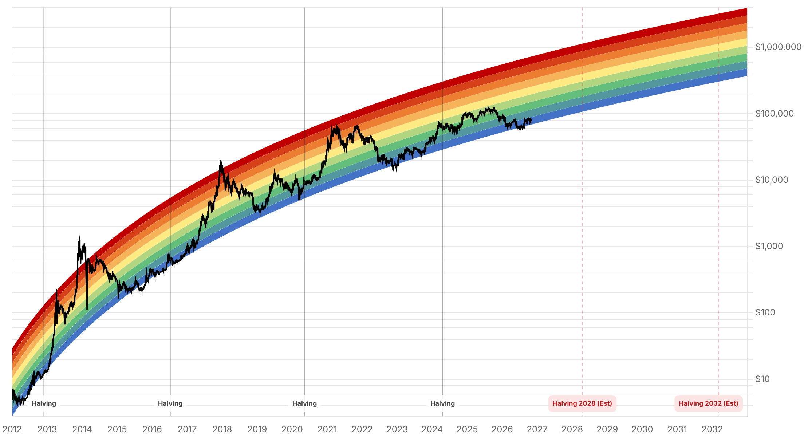

Reporte financiero
BTC cotiza en USD 78.345,14 en vivo (07:33 UTC), +0,71% intradía pero retrocediendo frente a los USD 79.787,49 de ayer (-1,8% día a día). Lo nuevo desde el reporte de ayer: Strategy publicó anoche (29 de octubre, tras el cierre) sus resultados reales del Q3 2026 -ya no la mera estimación que se reportó ayer- con una ganancia neta de USD 19.530M (vs. USD 2.790M un año antes) y un ingreso operativo de USD 21.000M, el mayor de su historia, impulsado por la revaluación de USD 20.910M en sus BTC. La compañía reporta 848.517 BTC en tenencia al 25 de octubre (+26% en lo que va del año) tras comprar 7.218 BTC (~USD 588,1M) y vender 5.552 BTC (~USD 348,6M) durante el trimestre -confirma que sigue siendo compradora neta, pero con ventas activas para financiar su nueva política. Los accionistas de las acciones preferentes (STRC, STRF, STRK, STRD) aprobaron con el 99,3% de los votos que los dividendos se acumulen a diario en vez de con calendario fijo (STRC paga por primera vez el 2 de noviembre); además, el CFO Andrew Kang deja el cargo el 5 de noviembre y será reemplazado por el actual COO, Reza Virasteh, en enero de 2027. El presidente ejecutivo Michael Saylor declaró: 'estamos en el comienzo del próximo mercado alcista de Bitcoin', mientras el CEO Phong Le calificó los dividendos diarios como 'un paso natural hacia el sistema financiero tokenizado 24/7/365'. En paralelo, el Fear & Greed Index cayó con fuerza de 51 (Neutral) a 30 (Fear) en 24 horas -el mayor movimiento diario de este indicador en las últimas semanas de reportes-, aunque no se encontró en fuentes verificables un catalizador único y confirmado para la caída (no se trata necesariamente de las ventas de BTC de Strategy, que son recurrentes desde mediados de año). Sin datos nuevos verificados de flujos de ETF para el 29 de octubre más allá de lo ya reportado ayer (26-28 de octubre), ni novedades en la apelación del fallo del Reino Unido, la Clarity Act, o el plazo de Blumenthal a Cantor Fitzgerald.
Tras el cierre del mercado del 29 de octubre, Strategy presentó sus resultados trimestrales reales (el reporte de ayer solo tenía la ganancia contable preanunciada de USD 20.910M por revaluación de BTC). La utilidad neta fue de USD 19.530M (USD 44,75 por acción diluida), frente a USD 2.790M un año antes; la utilidad neta atribuible a accionistas comunes fue de USD 19.120M tras restar USD 419,6M en dividendos preferentes. El ingreso operativo de USD 21.000M es el mayor de la historia de la compañía. Las tenencias de BTC llegaron a 848.517 al 25 de octubre (+26% en el año), tras comprar 7.218 BTC (~USD 588,1M) y vender 5.552 BTC (~USD 348,6M) en el trimestre -siguen siendo compradores netos, pero las ventas activas confirman el giro hacia financiar la operación de las preferentes con parte del balance en BTC, tendencia que ya se venía observando desde reportes anteriores. Los tenedores de las acciones preferentes STRC, STRF, STRK y STRD aprobaron (99,3% de los votos) que los dividendos se devenguen a diario en vez de con calendario trimestral/mensual fijo: STRC tiene su primera fecha de registro diaria el 1 de noviembre con pago el 2; las otras tres pasan a esquema diario a partir de enero de 2027 (fecha de registro inicial 1 de enero, pago 4 de enero). También se confirmó que el CFO Andrew Kang deja el cargo el 5 de noviembre, y que el actual COO, Reza Virasteh, asumirá como CFO en enero de 2027. El presidente ejecutivo Michael Saylor dijo en la llamada de resultados: 'estamos en el comienzo del próximo mercado alcista de Bitcoin', citando la adopción institucional y bancaria creciente y el halving esperado de 2028; también señaló que 'los mercados de capital de EE.UU. todavía no han convergido en un estándar de tokenización y un conjunto de normas', esperando que eso evolucione en los próximos 12 meses. El CEO Phong Le añadió que los dividendos diarios son 'un paso natural hacia el sistema financiero tokenizado 24/7/365' y reiteró el objetivo de duplicar el BTC por acción en siete años, financiando futuras compras principalmente mediante instrumentos de crédito digital en vez de nuevas emisiones de acciones comunes.
El indicador de sentimiento de alternative.me pasó de 51 puntos (Neutral) el 29 de octubre a 30 puntos (Fear) hoy -una caída marcada en un solo día, coincidiendo con el retroceso del precio de BTC de USD 79.787 a USD 78.314 (-1,8%). No se encontró en fuentes de prensa verificables un evento puntual que explique el movimiento de forma concluyente: pudo influir la combinación del tono hawkish de la Fed conocido ayer, la confirmación de ventas de BTC por parte de Strategy en su reporte de resultados, o simple toma de utilidades tras varios días de estabilidad -pero ninguna de estas hipótesis está confirmada por una fuente que las vincule explícitamente al movimiento de hoy, por lo que se reporta el dato sin atribuirle una causa específica.
No se encontraron novedades verificables desde el reporte de ayer en la apelación del fallo del Reino Unido sobre los 61.000 BTC, en la Clarity Act, ni en el plazo vencido de Blumenthal a Cantor Fitzgerald. Tampoco se pudo confirmar con fuentes fiables la cifra de flujos de ETF del 29 de octubre específicamente -los rastreadores consultados (SoSoValue, Farside) no devolvieron un dato fechado ese día en esta investigación-, por lo que se omite para no reportar una cifra sin verificar; el panorama más reciente verificado sigue siendo el de tres días consecutivos de entradas netas (26-28 de octubre) ya cubierto ayer.
| Periodo | Valor |
|---|---|
| 24 oct | 80790.84 |
| 25 oct | 80024.01 |
| 26 oct | 80006.66 |
| 27 oct | 80805.08 |
| 28 oct | 81267.59 |
| 29 oct | 77775.11 |
| 30 oct (en vivo) | 78345.14 |
| Periodo | Valor |
|---|---|
| Hoy | 30 |

“We're at the beginning of the next bitcoin bull market.”
“Daily dividends are a natural step toward the tokenized, 24/7/365 financial system.”
El catalizador inmediato ya quedó atrás (resultados de Strategy, publicados anoche) y el mercado lo está digiriendo con una caída notable del Fear & Greed Index (51 a 30) sin que se haya identificado una causa puntual y confirmada -vigilar si el sentimiento se estabiliza o si continúa deteriorándose en los próximos días. El nivel de USD 78.000-80.000 sigue siendo la referencia técnica inmediata.
Sin cambios confirmados desde ayer en el frente de tasas: el mercado seguía asignando una probabilidad alta a una subida de 25pb en la reunión del 9 de diciembre según lo reportado ayer, pero no se encontró una actualización verificada de esa cifra específica para hoy, por lo que no se repite el número para evitar citar un dato no corroborado en esta fecha. Strategy confirma que sigue comprando BTC de forma neta (7.218 comprados vs. 5.552 vendidos en el trimestre) pese a financiar parte de sus obligaciones de preferentes con ventas parciales -una señal mixta que merece seguimiento en los próximos reportes trimestrales.
Sin cambios en los objetivos de precio de largo plazo ya reportados en ediciones anteriores (Citigroup, Bernstein, Standard Chartered, Tom Lee, NYDIG, Armstrong). Strategy reafirmó su tesis de acumulación (+26% de BTC en tenencia en el año) y anunció un cambio estructural en cómo retribuye a sus accionistas preferentes (dividendos diarios desde noviembre/enero), además de una transición de CFO ya confirmada para enero de 2027 -cambios corporativos que no alteran la tesis cripto de fondo pero sí el perfil de ejecución de la compañía hacia 2027.
El salto de 51 a 30 en un día es inusual, pero ninguna fuente consultada lo vincula de forma concluyente a un evento específico (ni la Fed, ni Strategy, ni un evento macro puntual). Tratarlo como señal de cautela táctica, no como confirmación de un cambio de tendencia de fondo.
La compañía combina compras netas de BTC con ventas activas para financiar dividendos de sus preferentes -vigilar si esa proporción se mantiene favorable a la acumulación neta o si las ventas ganan peso relativo.
Esta edición no pudo confirmar datos nuevos y fechados al 29-30 de octubre para flujos de ETF ni para las probabilidades exactas de FedWatch; usar como referencia los últimos datos confirmados (reportes anteriores) hasta que aparezca una fuente fechada y verificable.